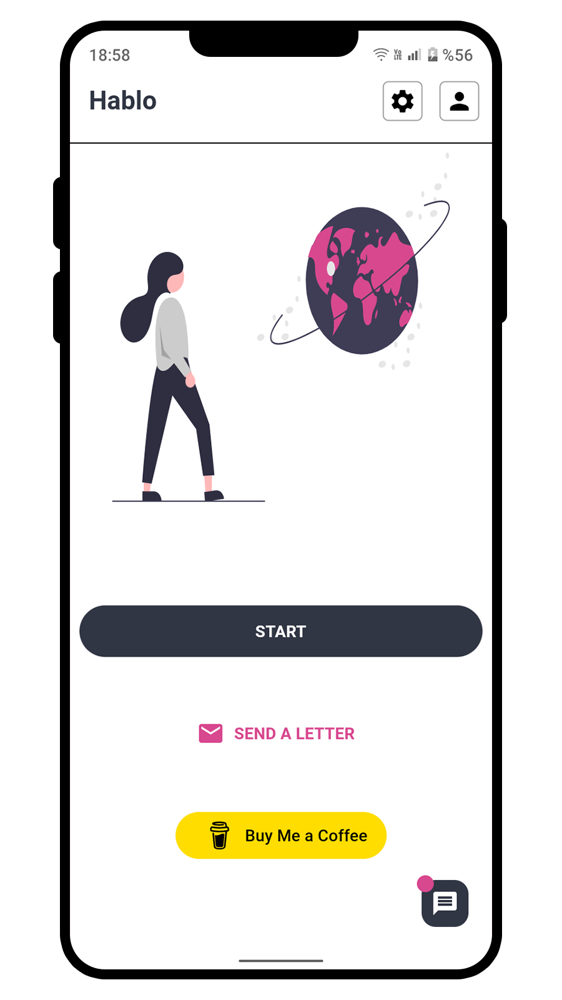

Jan 2026 — PresentRemote
Developer & Owner · ichibase
Building a backend platform that brings PostgreSQL, MongoDB, Typesense, and Redis together, with authentication written in Go and deployment on a VPS.
FULL STACK & MOBILE DEVELOPER
I build products.
From the backend to the app store.
I develop applications for iOS, Android, and the web — bringing together thoughtful interfaces, real-time data, and the infrastructure behind them.
I'm a full stack and mobile developer who takes products from an idea to a working release.
My work spans native iOS apps with SwiftUI, cross-platform development with Flutter, and web applications with Vue, Nuxt, React, and Next.js. I also build the APIs, databases, and authentication that connect everything.
I'm the creator of ichibase and Hablo Talk. Previously, I worked at Seerkel, developing a social platform across mobile and backend systems.
Let's work together02 / EXPERIENCE
Building a backend platform that brings PostgreSQL, MongoDB, Typesense, and Redis together, with authentication written in Go and deployment on a VPS.
Designed, built, and published a friend-making and chat platform. Developed iOS with SwiftUI, Android with Flutter, and the web experience with Nuxt and Vue, backed by Supabase and PostgreSQL.
Developed cross-platform mobile applications with Flutter and backend services with Node.js and TypeScript. Used Firebase for authentication, cloud storage, and real-time data, supporting delivery on iOS and Android.
03 / SELECTED WORK
Mobile, web, and the systems behind them.
01 / DEVELOPER PLATFORM
A unified backend platform for developers. Databases, search, caching, and authentication come together in one place, ready to run on a VPS.
Creator · Backend & infrastructure
Explore ichibase ↗
02 / SOCIAL & MESSAGING
A place to make friends and connect through real-time chat. I built the mobile apps, web experience, and backend, and manage the product from development through release.
Founder & solo developer · 2024 — Present
03 / BROWSER GAME
A browser-based puzzle game built with Unity and C#, compiled to WebGL. I handled the game logic, interface, and web publishing independently.
Solo developer · 2024 — Present
Play the game ↗04 / TOOLKIT
SwiftUI
Flutter · Dart
Vue · Nuxt · React
TypeScript · JavaScript
Go · Node.js · Next.js · REST APIs
PostgreSQL · MongoDB · Redis
Typesense · Firebase · Supabase
Unity · C# · WebGL
Anadolu University · Computer Programming
Jun 2022 — Jul 2024
Ongoing learning through documentation and hands-on development.
Turkish · Native
English · Advanced
German · Intermediate
French & Spanish · Elementary
05 / GET IN TOUCH
I'm open to new opportunities and collaborations.
ali_kales@hotmail.com